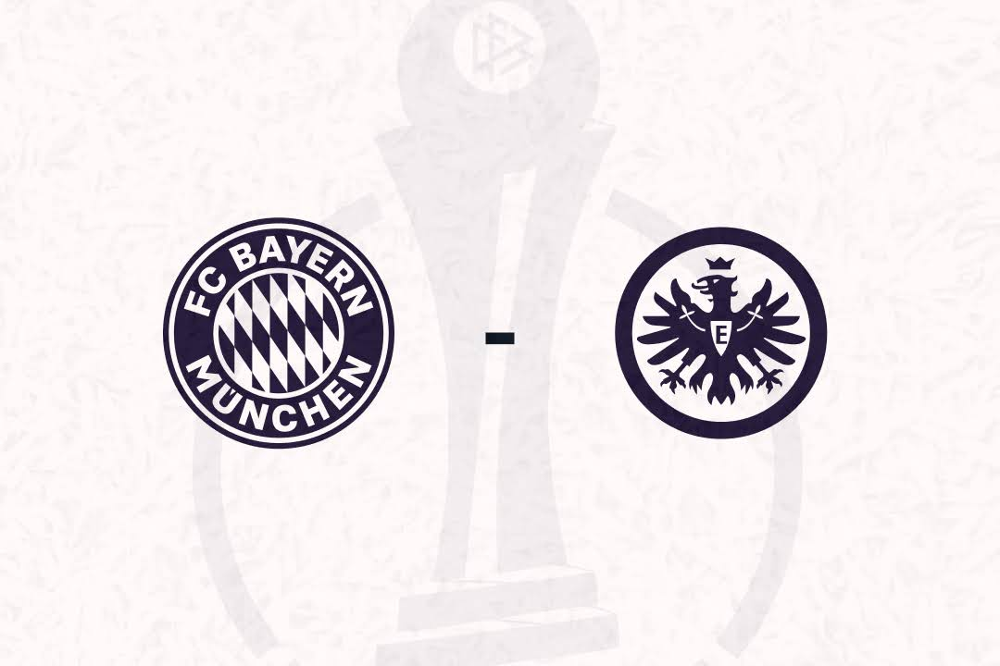

Spitzenreiter Frankfurt ringt die Bayern im Pokal Viertelfinale bis zum K.O., ehe in der 90. Minute der späte Ausgleich fällt. Die Verlängerung fällt klar in Richtung der Bayern aus, die das fünfte Jahr in Folge ins Halbfinale einziehen.
Nach nur fünf Minuten setzten die Hausherrinnen, die im Vergleich zum 3:1 gegen Hoffenheim auf vier Positionen verändert aufliefen, ein erstes Zeichen. Lea Schüller setzte sich auf der rechten Außenbahn bis in den Strafraum durch und bediente Zadrazil, deren Schuss über das Tor hinweg zischte. Daraufhin kam die ebenfalls auf vier Positionen veränderte Eintracht immer besser ins Spiel, das meiste spielte sich jedoch im Mittelfeld ab. Zwischen intensiven Zweikämpfen und einigen Fouls, die den Spielfluss immer wieder störten und drei Gelbe Karten mit sich brachten, Lührßen (10.), Eriksson (45.+1), Zadrazil (45.+2), gab es keine gefährlichen Strafraum-Szenen. Einzig ein Distanzschuss von Senß, der knapp rechts neben das Tor von Mahmutovic flog, gleichte die Statistik der Torschüsse aus.
Auch der Start in die zweite Hälfte gehörte den Münchnerinnen, wo Simon’s Flanke bei Harder landete und auch Zadrazil’s Nachschuss Johannes direkt zu einer doppelten Rettungstat zwangen. Wieder verlief das durchweg intensive Duell im Mittelfeld, wo sich Anyomi in der 58. Minute durch die Hintermannschaft der Bayern dribbelt und die freistehende Freigang bediente. Den Schuss der Nationalspielerin parierte Mahmutovic, die erneut die wieder im Kader stehende Gros vertrat, stark und verhinderte so die Frankfurter Führung.
In der 79. Minute war es dann soweit und die Eintracht ging in Führung: Reuteler rutschte zwar an Freigangs Hereingabe von der linken Seite vorbei, der Ball sprang durch eine kleine Berührung von Simon doch noch ins lange Eck. Der Rückschlag in der Schlussviertelstunde hat den Willen der Bayern aber neu entfacht: Der Druck nahm gehörig zu und kurz vor Beginn der Nachspielzeit belohnten sie sich letztendlich. Bühls Flanke schien zu flach zu kommen, die heranrauschende Damnjanovic veränderte die Flugbahn aber so, dass der Ball im kurzen Eck einschlug (90.). Wie schon im Halbfinale vor einem Jahr ging es in die Verlängerung.
Von den bereits gespielten 90 Minuten ließen sich die Vorjahres Finalistinnen gar nichts anmerken und belohnten sich im Nachhinein auch für die Leistung. Die eingewechselte Tanikawa lief zur Höchstleistung auf und bediente nach einem sehenswerten Dribbling Kapitänin Viggósdóttir, die das Spiel drehte (93.). Die Tabellenführerinnen gingen auf den Ausgleich, kamen aber zu keiner Torchance mehr. In der 104. Minute nahm die auffällige Tanikawa eine Vorlage von Harder dankend an und setzte den Ball aus der Distanz unter die Latte. Fünf Minuten später zappelte der Ball schließlich zur Entscheidung erneut im Frankfurter Tor, nachdem Damnjanovic mit ihrem zweiten Treffer auf 4:1 stellte.